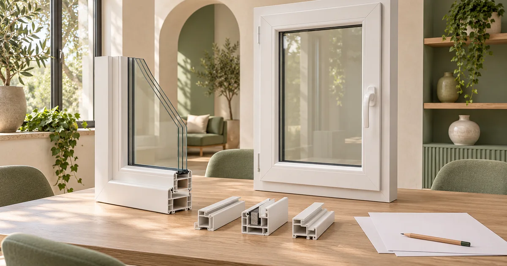

Per confrontare i produttori di finestre in PVC nel 2027, chiedi quale serramento completo viene proposto, chi lo realizza e chi segue la posa. Il nome sul profilo non descrive da solo vetro, ferramenta, configurazione e servizio dell'offerta. Un elenco di marchi è utile per orientarti, ma non stabilisce una graduatoria valida per ogni casa. La scelta parte dal tuo intervento e da documenti che puoi mettere a confronto.
In questa guida trovi cinque riferimenti presenti nel mercato dei serramenti, distinti per il loro ruolo, e un metodo per leggere le proposte. Le descrizioni rimandano alle pagine ufficiali dei marchi; i casi economici sono inventati per spiegare il ragionamento. Non pubblichiamo un listino nazionale né attribuiamo a un'intera azienda la prestazione di una singola finestra. Conserva insieme al preventivo la configurazione alla quale si riferiscono i dati ricevuti.
Produttore della finestra, sistema di profili e rivenditore
Nel confronto possono comparire nomi che svolgono attività differenti. Un'impresa può realizzare la finestra finita, un'altra sviluppare il sistema di profili utilizzato dal serramentista, mentre il punto vendita segue il rapporto con il cliente. Il soggetto che monta il serramento può coincidere con uno di questi oppure essere distinto. Prima di confrontare due marchi, chiedi quindi chi assuma ciascun ruolo nella tua proposta.
Scrivi nella scheda il nome del prodotto completo, il sistema quando pertinente, il riferimento del fornitore e quello di chi seguirà rilievo e installazione. Non è un esercizio burocratico: quando hai una domanda sul vetro o un'esigenza dopo la consegna, devi sapere a chi rivolgerti. Evita di considerare equivalenti due offerte solo perché riportano lo stesso nome del profilo, oppure di escluderle senza esaminare gli altri elementi.
Finstral: partire dalla configurazione della finestra
La pagina ufficiale Finstral sulle finestre in PVC presenta la propria gamma e il ruolo del PVC nel prodotto. È il punto dal quale verificare quali soluzioni siano pertinenti alla richiesta. Non trasformare una descrizione generale del catalogo in una dotazione certa del tuo preventivo: finiture, vetro, apertura e accessori devono comparire nella proposta che ricevi dal referente.
Al punto vendita chiedi di collegare il campione esposto alla soluzione quotata. Se stai guardando una finestra differente per dimensioni, rivestimento o vetro, fai spiegare quali caratteristiche restino confrontabili. Conserva il riferimento alla configurazione scelta e alle alternative considerate. Questa richiesta è utile con qualunque produttore e consente di capire quale parte del campione stai effettivamente acquistando, senza affidarti al ricordo della visita.
Internorm: distinguere le famiglie di prodotto
Il catalogo ufficiale Internorm distingue finestre in PVC, PVC-alluminio e altre famiglie. Per il confronto identifica la linea e la configurazione offerte: parlare soltanto di una finestra «Internorm» non chiarisce materiale esterno, apertura o caratteristiche richieste. Un valore riportato per un modello non deve essere esteso automaticamente agli altri prodotti del catalogo.
Se ti vengono presentate due soluzioni della stessa gamma, chiedi quale problema del tuo intervento affronti la differenza. Può riguardare aspetto, utilizzo o una caratteristica tecnica da valutare con il professionista. Il confronto deve restare riferito allo stesso vano e al servizio richiesto. Una dotazione aggiuntiva può avere senso, ma il motivo deve essere comprensibile prima di assegnarle un vantaggio nel confronto economico.
Oknoplast: collegare la gamma al modello offerto
Oknoplast si presenta come produttore di serramenti in PVC e finestre in alluminio. La gamma comprende soluzioni differenti: nel preventivo chiedi modello, apertura, finitura, vetro e accessori. La descrizione aziendale è un'informazione di orientamento; la valutazione dell'offerta richiede il documento riferito a ciò che verrà fornito. Lo stesso controllo vale quando una pagina promozionale mostra una configurazione particolare.
Prepara una domanda concreta per il rivenditore: «Il campione che vedo corrisponde al modello e al vetro indicati nella proposta?» Se la risposta richiede un'altra configurazione, chiedi che sia identificata. Il confronto sul prodotto diventa più semplice quando puoi collegare ciò che hai visto al codice della proposta, senza dover ricostruire le differenze dopo la firma o durante la consegna.
Schüco PWS: il sistema e il serramento realizzato
Il sito ufficiale Schüco PWS Italia presenta sistemi per finestre e scorrevoli in PVC e percorsi per i partner. Nella tua offerta chiarisci quale sistema venga utilizzato e quale soggetto realizzi la finestra. È una distinzione pratica: il nome del sistema e il riferimento del serramento completo devono essere leggibili insieme, soprattutto quando confronti proposte provenienti da imprese differenti.
Chiedi quali documenti siano riferiti alla configurazione offerta e chi risponda delle attività comprese. Non considerare una pagina generale del sistema come prova di ogni caratteristica del prodotto installato. Se un requisito riguarda il tuo intervento, fai indicare come venga verificato e da chi. Conserva anche il riferimento dell'azienda con la quale stai definendo il lavoro, oltre al materiale del marchio.
VEKA: riconoscere il ruolo dei profili
VEKA Italia descrive la propria attività nella produzione di profili per sistemi in PVC. Quando il nome compare in un preventivo, chiedi chi realizzi il serramento completo e quale linea venga impiegata. Non basta confrontare due nomi di sistema per conoscere la proposta finale: vetro, dimensioni, apertura, ferramenta e servizi devono essere identificati nel documento del fornitore.
Se ricevi più offerte che citano VEKA, prepara la stessa scheda per tutte. Una differenza di prezzo può riguardare configurazione o opere, non soltanto il profilo. Chiedi chiarimenti sulle voci che non coincidono e registra le risposte. Il metodo ti permette di discutere differenze reali con il serramentista, evitando sia una preferenza automatica per il marchio sia una comparazione costruita su dati incompleti.
Descrivi il problema stanza per stanza
Prima della richiesta, indica quanti vani sono coinvolti, come vengono utilizzati gli ambienti e quale esigenza vuoi risolvere. Rumore, spifferi, difficoltà di apertura, gestione del sole e organizzazione dei lavori sono domande differenti. Una descrizione precisa aiuta a preparare il confronto, ma non sostituisce il rilievo e la valutazione professionale. Distingui ciò che osservi dalla causa che ipotizzi: un problema di comfort non identifica da solo l'intervento necessario.
Se sostituisci le finestre mentre vivi in casa, segnala locali che devono restare utilizzabili, accessi e vincoli organizzativi noti. Chiedi chi dovrà confermare dimensioni e condizioni del vano prima dell'ordine. Le fotografie generali possono aiutare a preparare l'incontro, ma non sono un rilievo esecutivo. Una misura indicativa comunicata dal cliente non deve diventare la base definitiva della fornitura senza le verifiche previste.
Chiedi il dato riferito al prodotto completo
Per la valutazione energetica, evita di confrontare un dato del solo vetro con quello dell'intera finestra. Chiedi quale grandezza venga indicata, a quale configurazione si riferisca e dove sia documentata. La guida ai controlli su Uw e preventivi aiuta a preparare questa lettura. La scelta dei requisiti pertinenti al progetto resta al professionista incaricato, sulla base dell'edificio e dell'intervento.
Per il rumore segui lo stesso principio: un valore non descrive automaticamente ciò che otterrai nella stanza dopo i lavori. Configurazione, collegamenti e altre parti del vano richiedono una valutazione coordinata. Consulta i dieci controlli per confrontare l'isolamento acustico e chiedi quali verifiche siano pertinenti al caso. Non attribuire al marchio una prestazione unica valida per ogni apertura.
La posa deve essere leggibile nel preventivo
Una riga «posa compresa» non chiarisce tutte le attività dell'intervento. Chiedi come verranno valutati vano, elementi esistenti e opere collegate, e chi definirà la soluzione. Verifica smontaggio, protezioni, movimentazione, ripristini e gestione dei materiali rimossi secondo il perimetro concordato. Se alcune condizioni potranno essere confermate soltanto dopo un accertamento, chiedi come verranno comunicate e come saranno valutate le eventuali modifiche.
Non scegliere un dettaglio esecutivo copiandolo da una fotografia online. Prepara invece le domande da rivolgere a chi progetta e realizza il lavoro. La guida alla posa dei serramenti e ai documenti da chiedere distingue i passaggi e contiene una scheda operativa. Il confronto economico diventa più chiaro quando le offerte descrivono attività equivalenti, con responsabilità e documenti riconoscibili.
Esempio inventato: confrontare due totali
Immagina due proposte per lo stesso appartamento: la prima indica 6.400 euro e comprende alcune opere accessorie; la seconda indica 5.900 euro ma lascia quelle opere da definire. Se successivamente vengono ipotizzati altri 800 euro, il secondo totale diventa 6.700 euro. Sono cifre inventate per mostrare il calcolo, non prezzi di mercato. Prima di scegliere devi verificare anche quali prodotti e attività siano effettivamente confrontabili.
Conserva importo iniziale, integrazione e motivazione, invece di cancellare la prima cifra. Distingui base fiscale, condizioni di pagamento e validità della proposta. Non dedurre la convenienza dalla sola divisione per il numero di finestre: vani diversi possono richiedere prodotti o lavorazioni differenti. Quando una voce non è chiara, formula una domanda specifica e chiedi un documento aggiornato prima di considerare risolto il confronto.
Garanzie e assistenza: leggere il servizio concreto
Chiedi quali condizioni scritte riguardino il prodotto e quali attività seguano la consegna. Individua il referente per una segnalazione e i documenti da conservare. Una durata riportata in una pagina promozionale non spiega automaticamente ambito, condizioni ed esclusioni della tua proposta. Per comprendere gli aspetti contrattuali pertinenti occorre leggere i documenti applicabili, senza attribuire a un riassunto editoriale il valore di una valutazione del singolo rapporto.
Durante la visita chiedi come riconoscere la configurazione acquistata e quali istruzioni riceverai. Un servizio di assistenza deve poter essere contattato attraverso un canale reale. Se il referente commerciale, l'impresa di posa e il produttore sono distinti, chiarisci la sequenza di contatto per evitare rimbalzi. Registra le risposte insieme alla proposta, così un'esigenza successiva potrà essere riferita al documento corretto.
Tre priorità diverse, tre confronti da preparare
Per una camera esposta al traffico, la prima domanda è quale valutazione del vano e del rumore serva prima dell'offerta. Per una casa con aperture difficili da utilizzare, porta esempi concreti dei movimenti che creano disagio. Per un appartamento abitato durante i lavori, chiarisci preparazione e sequenza dell'intervento. Sono priorità che possono cambiare il confronto fra configurazioni dello stesso marchio o fra prodotti di aziende differenti.
Non costruire una somma di punteggi inventati per decidere quale proposta vinca. Se un requisito è necessario per il progetto, chiedi al referente competente come verificarlo; se riguarda una preferenza, dichiarala come tale. Un'offerta non documentata su un punto importante non diventa equivalente perché ottiene un voto alto su un'altra voce. Conserva le domande aperte finché le risposte non permettono una decisione leggibile.
Una scheda unica per i cinque riferimenti
Scarica la scheda CSV per confrontare produttori, sistemi e offerte PVC. Contiene campi distinti per soggetti coinvolti, configurazione, prestazioni documentate, opere e assistenza. È un modello della redazione, senza una classifica precompilata. Usa una colonna per ciascuna proposta e conserva il riferimento del documento che supporta ogni risposta, invece di riempire le caselle con supposizioni.
Prima della scelta chiedi a una persona che non era presente alla visita di leggere il riepilogo. Deve capire cosa stai acquistando, chi segue le verifiche e quali condizioni restino aperte. Se non riesce a distinguere campione, sistema e prodotto offerto, rivedi i riferimenti. La prova non sostituisce le valutazioni tecniche o contrattuali, ma evidenzia informazioni mancanti che possono essere chiarite prima dell'ordine.
Come preparare il secondo incontro dopo tre preventivi
Immagina tre proposte ricevute per lo stesso intervento. La prima descrive bene il prodotto ma non chiarisce i ripristini; la seconda identifica le opere ma riporta soltanto il nome del sistema; la terza comprende una configurazione diversa da quella richiesta. Non scegliere subito quella con il totale più basso. Invia a ciascun referente le domande che riguardano la propria offerta e chiedi che i chiarimenti importanti compaiano nella versione da valutare.
Al secondo incontro porta il riepilogo, non una lista di voti ai marchi. Chiedi di confermare quali elementi restino uguali rispetto alla prima proposta e quali siano cambiati. Se una soluzione alternativa risponde meglio a un'esigenza, rendi esplicito il motivo e conserva la valutazione pertinente. Una modifica di configurazione può richiedere un nuovo confronto con le altre offerte; non sommare caratteristiche appartenenti a versioni diverse per creare una finestra che nessuno ha effettivamente proposto.
Infine, prepara una breve lista delle decisioni ancora necessarie al cliente: finitura, modalità di utilizzo, condizioni organizzative e passaggio successivo. Le verifiche tecniche restano ai soggetti incaricati. L'obiettivo del riepilogo è far emergere ciò che puoi scegliere e ciò che devi ancora chiedere, senza anticipare l'ordine soltanto per chiudere la discussione sul prezzo.
Domande frequenti
Qual è il miglior produttore di finestre in PVC?
Non esiste una graduatoria valida per ogni casa. Confronta prodotti documentati, configurazioni equivalenti, posa e servizio rispetto alle esigenze del tuo intervento.
Due finestre con lo stesso profilo sono uguali?
Il nome del sistema non descrive da solo il prodotto completo. Chiedi chi lo realizza e verifica vetro, apertura, dimensioni, ferramenta, opere e documenti dell'offerta.
Posso confrontare i prezzi soltanto al metro quadrato?
Quel rapporto non chiarisce tutto il perimetro della fornitura. Prima verifica configurazione, attività comprese, esclusioni e basi degli importi, utilizzando proposte riferite allo stesso intervento.
Le agevolazioni 2027 sono comprese nella convenienza?
Valuta separatamente il prezzo lordo e gli eventuali benefici da verificare per il singolo caso su fonti ufficiali. Un incentivo ipotizzato non equivale a uno sconto già acquisito.